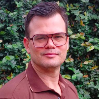
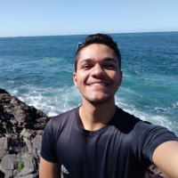

ok
SARAH!
(Sistema Autônomo Robótico para Assistência Humana)
About us:
The Reconbots team, based at the Federal University of Recôncavo da Bahia (UFRB), was founded on October 3, 2024. It focuses on robotics competitions and research, achieving success in categories like Mega Sumo RC and Autonomous, including a runner-up finish at Campus Party Brazil 2024 (CPBR16). The team participates in events such as Robocore Experience, Robodori, CDR Arena, ERBASE, and the Recôncavo Robot Challenge (RRC), which it organizes with private partners.
 UFRB
UFRB
 CETEC
CETEC
 LIMATEC
LIMATEC
M7TECH
Meet RASHA (SARAH):
Team:
 Prof. Dr. Ivanoé João Rodowanski
Prof. Dr. Ivanoé João Rodowanski
 Prof. Dr. Luiz Carlos S. S. Júnior
Prof. Dr. Luiz Carlos S. S. Júnior

Prof. Dr. Tiago Palma Pagano
 Prof. Dr. Igor Dantas dos S. Miranda.
Prof. Dr. Igor Dantas dos S. Miranda.
 Prof. Dr. Gildeberto de Souza Cardoso
Luzimário Lima Pereira
Prof. Dr. Gildeberto de Souza Cardoso
Luzimário Lima Pereira
 Thaisy Jennifer dos S. Ferreira
Thaisy Jennifer dos S. Ferreira
 Gustavo Santos O. Abbas
Gustavo Santos O. Abbas
 Maurício Soares P. da Silva
Maurício Soares P. da Silva
 Filipe Novaes Moreira
Filipe Novaes Moreira

Thiago Henrique de A. Oliveira
 Gabriel Marcolino Silva
Gabriel Marcolino Silva
- nome professor -